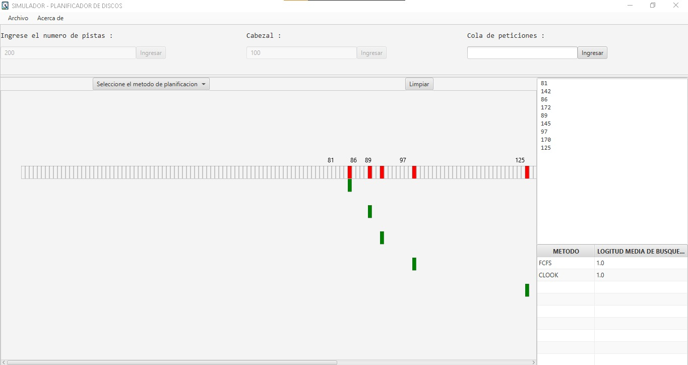

Bienvenido, en este
manual aprenderas a usar
el simulador de
planificacion de discos
Empezaremos mostrando la
interfaz de inicio del simulador
Pantalla de default
que se
muestra al usuario
Ahora es importante
definir
tres elementos importantes:
Numero de Pistas
El inicio del cabezal
El ingreso de la cola de peticiones
Instrucciones de uso:
Iniciaremos con el llenado
de datos
Elejimos un metodo de
planificación de Discos
Algoritmo FCFS
Elegiremos un metodo de
planificacion
en este caso sera "FCFS".Con los datos
llenados previamente obtendremos la
siguinete salida
Este algoritmo atiende las
peticiones por orden de llegada

Finalmente en el recuadro
inferior derecho se va generando el
tiempo de posicionamiento de este
algoritmo
Algoritmo SSTF
Elegiremos un metodo de
planificacion
en este caso sera "SSTF".Con los datos
llenados previamente obtendremos la
siguinete salida
Este algoritmo atiende la peticion
que implica la pista mas cercana a la
posicion actual de la cabecera
Finalmente en el recuadro
inferior derecho se va generando el
tiempo de posicionamiento de este
algoritmo comparado con los algoritmos
previamente seleccionados
Algoritmo SCAN
Elegiremos un metodo de
planificacion
en este caso sera "SCAN".Con los datos
llenados previamente obtendremos la
siguinete salida
Este algoritmo la cabeza va de un
extremo del disco al otro sirviendo las
solicitudes que este encuentra a su paso
Finalmente en el recuadro
inferior derecho se va generando el
tiempo de posicionamiento de este
algoritmo comparado con los algoritmos
previamente seleccionados
Algoritmo C-SCAN
Elegiremos un metodo de
planificacion
en este caso sera "C-SCAN".Con los datos
llenados previamente obtendremos la
siguinete salida
Este algoritmo es muy similar al
SCAN .A la vuelta no se sirve ninguna
peticion
Trata de reducir el tiempo de espera
promedio del SCAN
Finalmente en el recuadro
inferior derecho se va generando el
tiempo de posicionamiento de este
algoritmo comparado con los algoritmos
previamente seleccionados
Algoritmo LOOK
Elegiremos un metodo de
planificacion
en este caso sera "LOOK".Con los datos
llenados previamente obtendremos la
siguinete salida
Este algoritmo Funciona igual que el
SCAN pero solo se llega a la ultima
peticion,no al final del disco
Finalmente en el recuadro
inferior derecho se va generando el
tiempo de posicionamiento de este
algoritmo comparado con los algoritmos
previamente seleccionados
Algoritmo C-LOOK
Elegiremos un metodo de
planificacion
en este caso sera "C-LOOK".Con los datos
llenados previamente obtendremos la
siguinete salida
Este algoritmo funciona igual que el
C-SCAN pero solo llega hasta la ultima peticion ,no hasta el final del disco
Finalmente en el recuadro
inferior derecho se va generando el
tiempo de posicionamiento de este
algoritmo comparado con los algoritmos
previamente seleccionados
Por ulimo y no menos importante
Elegiremos el boton de limpiar para reestablecer todos los valores de la interfaz y
poder probar otros ejercicios de la misma manera que se fue enseñando en pasos anteriores